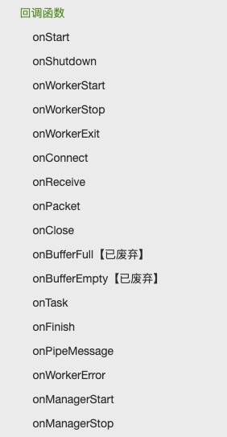

swoole已经是php高性能服务器事实标准，可以参考这个博客使用swoole开发业务框架
项目地址：https://github.com/neatlife/pframework
欢迎star，欢迎pr
⁃ 框架执行的核心流程图如下（右键可查看大图）：

- 通用组件尽量遵守psr进行实现，以提高对三方组件的兼容性
- 事件驱动
全局变量适配
swoole是从命令行启动，常驻进程运行，web请求处理依赖的全局变量比如 \(_SERVER, \)_GET, \(_POST, \)_FILES等不会随着每次请求的改变填上对应的值，swoole把这个每次请求的变量放在了Swoole\Http\Request对象中
比如把swoole的\(request->server适配到全局变量\)_SERVER中
$server = array_change_key_case($request->server, CASE_UPPER);
foreach ($request->header as $key => $val) {
$server['HTTP_' . str_replace('-', '_', strtoupper($key))] = $val;
}
$_SERVER = $server;
其它环境变量的对应如下
$_GET = $request->get;
$_POST = $request->post;
$_COOKIE = $request->cookie;
$_FILES = $request->files;
Symfony Console组件包装
swoole的服务器从命令行启动，使用这个Symfony Console组件包装一下可以方便的启动swoole
<?php
class SwooleServerCommand extends Command
{
// ...
protected function execute(InputInterface $input, OutputInterface $output)
{
$options = $this->parseOption($input);
$http = new HttpServer($options['host'], $options['port']);
$swooleEventHandler = new SwooleEventHandler($this->container);
foreach (self::$swooleEventList as $eventName) {
$http->on($eventName, [$swooleEventHandler, 'on' . ucfirst($eventName)]);
}
echo "server started at {$options['host']}:{$options['port']}..." . PHP_EOL;
$http->start();
}
// ...
}
Symfony EventDispatcher分发swoole事件
swoole的http事件通过swoole的回调函数触发，这里使用事件分发器，将这个框架的代码尽可能和swoole分离，实现松耦合目标
这里使用这个事件分发器处理了swoole的start和request事件
创建事件分发器对象
$this->eventDispatcher = new EventDispatcher();
分发start和request事件
class SwooleEventHandler
{
public function onStart()
{
Application::getInstance()->getEventDispatcher()->dispatch(Event::START, new GenericEvent());
}
public function onRequest(Request $request, Response $response)
{
$server = array_change_key_case($request->server, CASE_UPPER);
foreach ($request->header as $key => $val) {
$server['HTTP_' . str_replace('-', '_', strtoupper($key))] = $val;
}
$_SERVER = $server;
Application::getInstance()->getEventDispatcher()->dispatch(Event::REQUEST, new GenericEvent($response));
}
}
swoole完整的事件列表参考：https://wiki.swoole.com/wiki/page/41.html

Symfony Dependency Injection提供对象容器
使用Symfony的容器来共享应用所有的对象，避免对象重复的创建，并且可以在应用任何位置方便的获取容器中的对象
创建容器
new ContainerBuilder();
设置对象
$this->container->set(Application::class, $this);
获取对象
$this->container->get(Application::class);
Middleware处理http请求
中间件一般设计成嵌套调用，这种情况下需要用递归来实现，核心代码如下
protected function callMiddleware($request, $response, $index = 0)
{
if (!isset($this->middleware[$index])) {
return $response;
}
$middleware = new $this->middleware[$index];
return $middleware($request, $response, function ($request, $response) use ($index) {
$this->callMiddleware($request, $response, $index + 1);
});
}
composer.json
完整的composer.json依赖如下
"require": {
"symfony/console": "^3.4",
"symfony/event-dispatcher": "^3.4",
"symfony/dependency-injection": "^3.4",
"symfony/http-foundation": "^3.4"
},
"require-dev": {
"phpunit/phpunit": "^6.0"
},
一些注意的点
symfony的Request对象没有实现psr的ServerRequestInterface，如果要遵守psr的request，可以考虑其它request组件，比如zend framework带的request
参考资料
持续更新中...